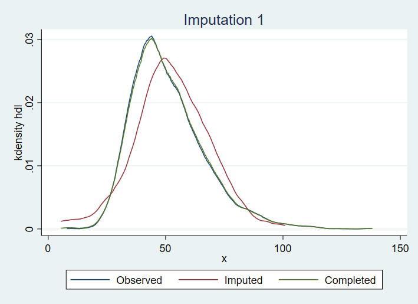

. use nhanesMort.dta, clear
(Written by R. )
. summ tMonths if dead==0
Variable | Obs Mean Std. Dev. Min Max
-------------+---------------------------------------------------------
tMonths | 3,275 190.716 5.996382 180 201
. gen dead10 = 1*((dead==1) & (tMonths<120))
. logistic dead10 i.gender age i.ethnicity sbp waist_circum weight total_chol hdl i.ALQ150
Logistic regression Number of obs = 3,207
LR chi2(12) = 812.51
Prob > chi2 = 0.0000
Log likelihood = -926.52636 Pseudo R2 = 0.3048
-------------------------------------------------------------------------------------
dead10 | Odds Ratio Std. Err. z P>|z| [95% Conf. Interval]
--------------------+----------------------------------------------------------------
gender |
Female | .5566595 .0774084 -4.21 0.000 .4238602 .7310661
age | 1.087264 .0059164 15.38 0.000 1.07573 1.098922
|
ethnicity |
Other Hispanic | .7688017 .2195072 -0.92 0.357 .4393194 1.34539
Non-Hispanic White | .9153538 .1386723 -0.58 0.559 .6801983 1.231806
Non-Hispanic Black | 1.388326 .2725993 1.67 0.095 .9448375 2.03998
Other Race | .9203752 .4170787 -0.18 0.855 .3786457 2.237159
|
sbp | 1.006176 .0029841 2.08 0.038 1.000344 1.012042
waist_circum | 1.034965 .0110383 3.22 0.001 1.013555 1.056828
weight | .9646324 .0086442 -4.02 0.000 .9478379 .9817244
total_chol | .9994396 .0015256 -0.37 0.713 .996454 1.002434
hdl | 1.001088 .0039712 0.27 0.784 .9933345 1.008901
1.ALQ150 | 1.836905 .2594248 4.31 0.000 1.392747 2.422709
_cons | .0003768 .0002677 -11.10 0.000 .0000936 .0015168
-------------------------------------------------------------------------------------
Note: _cons estimates baseline odds.
. est store CCA
. misstable patterns
Missing-value patterns
(1 means complete)
| Pattern
Percent | 1 2 3 4 5 6
------------+---------------------
72% | 1 1 1 1 1 1
|
16 | 1 1 1 1 1 0
4 | 1 1 1 0 0 1
2 | 1 1 1 0 0 0
1 | 1 0 1 1 1 1
<1 | 1 0 1 1 1 0
<1 | 1 1 0 1 1 0
<1 | 1 1 0 1 1 1
<1 | 0 1 0 1 1 0
<1 | 1 0 0 1 1 0
<1 | 1 1 0 0 0 0
<1 | 0 1 0 1 1 1
<1 | 1 0 0 0 0 0
<1 | 1 0 1 0 0 0
<1 | 1 0 1 0 0 1
<1 | 0 1 0 0 0 0
<1 | 1 1 0 0 0 1
<1 | 0 0 0 0 0 0
<1 | 1 0 0 1 1 1
<1 | 0 0 0 1 1 0
<1 | 0 1 0 0 0 1
<1 | 0 0 0 0 0 1
<1 | 1 0 0 0 0 1
<1 | 0 0 0 1 1 1
<1 | 0 1 1 1 1 1
<1 | 1 0 1 1 0 0
<1 | 1 1 1 0 1 1
<1 | 1 1 1 1 0 0
------------+---------------------
100% |
Variables are (1) weight (2) sbp (3) waist_circum (4) total_chol (5) hdl (6) ALQ150
Is the missingness pattern monotone?
No, the pattern is not monotone.
. mi set flong
. mi register imputed sbp waist_circum weight total_chol hdl ALQ150
(1234 m=0 obs. now marked as incomplete)
. mi impute chained (regress) sbp waist_circum weight total_chol hdl (logit) ALQ150 = dead10 gender age i
> .ethnicity, add(10) rseed(61177)
Conditional models:
weight: regress weight sbp waist_circum total_chol hdl i.ALQ150 dead10 gender age
i.ethnicity
sbp: regress sbp weight waist_circum total_chol hdl i.ALQ150 dead10 gender age
i.ethnicity
waist_circum: regress waist_circum weight sbp total_chol hdl i.ALQ150 dead10 gender age
i.ethnicity
total_chol: regress total_chol weight sbp waist_circum hdl i.ALQ150 dead10 gender age
i.ethnicity
hdl: regress hdl weight sbp waist_circum total_chol i.ALQ150 dead10 gender age
i.ethnicity
ALQ150: logit ALQ150 weight sbp waist_circum total_chol hdl dead10 gender age i.ethnicity
Performing chained iterations ...
Multivariate imputation Imputations = 10
Chained equations added = 10
Imputed: m=1 through m=10 updated = 0
Initialization: monotone Iterations = 100
burn-in = 10
sbp: linear regression
waist_circum: linear regression
weight: linear regression
total_chol: linear regression
hdl: linear regression
ALQ150: logistic regression
------------------------------------------------------------------
| Observations per m
|----------------------------------------------
Variable | Complete Incomplete Imputed | Total
-------------------+-----------------------------------+----------
sbp | 4285 156 156 | 4441
waist_circum | 4274 167 167 | 4441
weight | 4384 57 57 | 4441
total_chol | 4115 326 326 | 4441
hdl | 4114 327 327 | 4441
ALQ150 | 3511 930 930 | 4441
------------------------------------------------------------------
(complete + incomplete = total; imputed is the minimum across m
of the number of filled-in observations.)
. mi estimate, post: logistic dead10 i.gender age i.ethnicity sbp waist_circum weight total_chol hdl i.AL
> Q150
Multiple-imputation estimates Imputations = 10
Logistic regression Number of obs = 4,441
Average RVI = 0.0652
Largest FMI = 0.3372
DF adjustment: Large sample DF: min = 86.76
avg = 139,405.34
max = 1350815.36
Model F test: Equal FMI F( 12,23253.2) = 55.61
Within VCE type: OIM Prob > F = 0.0000
-------------------------------------------------------------------------------------
dead10 | Coef. Std. Err. t P>|t| [95% Conf. Interval]
--------------------+----------------------------------------------------------------
gender |
Female | -.504715 .1119002 -4.51 0.000 -.7240552 -.2853747
age | .0825889 .0043623 18.93 0.000 .0740389 .0911388
|
ethnicity |
Other Hispanic | -.1394848 .2295439 -0.61 0.543 -.589383 .3104134
Non-Hispanic White | -.0366602 .1262377 -0.29 0.772 -.2840866 .2107662
Non-Hispanic Black | .3073941 .1580044 1.95 0.052 -.002301 .6170892
Other Race | -.0049284 .3104684 -0.02 0.987 -.6134408 .6035841
|
sbp | .0063832 .0023325 2.74 0.006 .0018115 .0109549
waist_circum | .0348974 .0086112 4.05 0.000 .0180167 .0517781
weight | -.0346746 .0072201 -4.80 0.000 -.0488302 -.0205189
total_chol | -.0020132 .001267 -1.59 0.112 -.0044972 .0004709
hdl | -.0008298 .0037003 -0.22 0.823 -.0081133 .0064538
1.ALQ150 | .6080822 .1435348 4.24 0.000 .32278 .8933845
_cons | -7.538321 .575492 -13.10 0.000 -8.666347 -6.410295
-------------------------------------------------------------------------------------
. est store MI
. est table CCA MI, se
----------------------------------------
Variable | CCA MI
-------------+--------------------------
gender |
Female | -.58580145 -.50471496
| .13905872 .11190019
|
age | .08366433 .08258889
| .00544153 .00436226
|
ethnicity |
Other His.. | -.26292218 -.1394848
| .28551866 .22954391
Non-Hispa.. | -.08844462 -.03666019
| .1514958 .12623775
Non-Hispa.. | .32809877 .30739413
| .1963511 .15800437
Other Race | -.08297386 -.00492836
| .45316162 .31046835
|
sbp | .00615727 .00638322
| .00296579 .00233248
waist_circum | .0343679 .03489741
| .01066536 .00861123
weight | -.0360082 -.03467458
| .00896118 .00722008
total_chol | -.00056057 -.00201316
| .00152642 .00126696
hdl | .0010871 -.00082976
| .00396689 .00370027
|
ALQ150 |
1 | .60808226 .60808224
| .14122925 .14353483
|
_cons | -7.8838338 -7.5383212
| .7105578 .57549201
----------------------------------------
legend: b/se
How do the two sets of estimates compare? What assumptions are required for the two sets of results to be valid? How do the standard errors compare?
The estimates are broadly quite close to each other. There are some differences though. The intercept has changed non trivially, as has the coefficient for being female.
As discussed in the previous practical, the CCA analysis is valid under a variety of different possible conditions. In the end we found it plausible that the CCA was valid as the probability of being a complete case was plausibly independent of the outcome conditional on the covariates. This assumption allows for the possibility that missingness in ALQ150 depends on the Yes/No answer to ALQ150 (i.e. MNAR), and it is quite plausible that this is the case. In particular one could imagine that people who are or have been heavy drinkers may be less willing to respond to the ALQ150 question.
The MI analysis is valid assuming the data are MAR and the imputation models are correctly specified. Here where we have a complex missingness pattern, MAR is difficult to understand (there is a technical definition for it still though). Roughly speaking though, if missingness in ALQ150 is dependent on ALQ150, conditional on the other variables we have used, MAR is violated, and so the MI estimates may be biased.
The MI standard errors are all smaller than the CCA standard errors. This is what we should expect. We have gained information by using MI. The information we have gained is that from the the observed values in the incomplete cases who are omitted in the CCA. Because of this, we tend to gain the most information for coefficicients of the fully observed variables, whereas coefficients for variables with the largest amounts of missing data are reduced less (at least in the absence of strong auxiliary variables).
. save prac3imps, replace
file prac3imps.dta saved
. mi impute chained (regress) sbp waist_circum weight total_chol hdl (logit) ALQ150 = dead10 gender age i
> .ethnicity, burnin(100) rseed(61177) chainonly savetrace(impstats, replace)
Conditional models:
weight: regress weight sbp waist_circum total_chol hdl i.ALQ150 dead10 gender age
i.ethnicity
sbp: regress sbp weight waist_circum total_chol hdl i.ALQ150 dead10 gender age
i.ethnicity
waist_circum: regress waist_circum weight sbp total_chol hdl i.ALQ150 dead10 gender age
i.ethnicity
total_chol: regress total_chol weight sbp waist_circum hdl i.ALQ150 dead10 gender age
i.ethnicity
hdl: regress hdl weight sbp waist_circum total_chol i.ALQ150 dead10 gender age
i.ethnicity
ALQ150: logit ALQ150 weight sbp waist_circum total_chol hdl dead10 gender age i.ethnicity
Performing chained iterations ...
Note: No imputation performed.
. use impstats, clear
(Summaries of imputed values from -mi impute chained-)
. scatter ALQ150_mean iter
. use prac3imps, clear
(Written by R. )
. midiagplots hdl, name(pr3plot1, replace)
(M = 10 imputations)
(imputed: sbp waist_circum weight total_chol hdl ALQ150)

Do you see any large differences between the distributions of the observed and imputed values of hdl that concern you?
There is a noticeable difference in distribution. As noted previously, unless the data are MCAR we can expect some difference in distribution between observed and imputed values. However, the plot reveals that the observed HDL values are somewhat right skewed, and the imputed values do not seem to have such a skewness, as a result of normal linear regression being used. One alternative which could be explored is using the predictive mean matching imputation pmm, rather than normal linear regression.
. mi estimate, mcerror: logistic dead10 i.gender age i.ethnicity sbp waist_circum weight total_chol hdl i
> .ALQ150
Multiple-imputation estimates Imputations = 10
Logistic regression Number of obs = 4,441
Average RVI = 0.0652
Largest FMI = 0.3372
DF adjustment: Large sample DF: min = 86.76
avg = 139,405.34
max = 1350815.36
Model F test: Equal FMI F( 12,23253.2) = 55.61
Within VCE type: OIM Prob > F = 0.0000
-------------------------------------------------------------------------------------
dead10 | Coef. Std. Err. t P>|t| [95% Conf. Interval]
--------------------+----------------------------------------------------------------
gender |
Female | -.504715 .1119002 -4.51 0.000 -.7240552 -.2853747
| .0054382 .0003172 0.05 0.000 .0054561 .0054937
|
age | .0825889 .0043623 18.93 0.000 .0740389 .0911388
| .0001152 7.86e-06 0.04 0.000 .0001119 .0001205
|
|
ethnicity |
Other Hispanic | -.1394848 .2295439 -0.61 0.543 -.589383 .3104134
| .0035163 .000372 0.01 0.010 .0040853 .0030171
|
Non-Hispanic White | -.0366602 .1262377 -0.29 0.772 -.2840866 .2107662
| .0042024 .000215 0.03 0.025 .0043697 .0040727
|
Non-Hispanic Black | .3073941 .1580044 1.95 0.052 -.002301 .6170892
| .0062348 .000592 0.04 0.004 .0055321 .0070627
|
Other Race | -.0049284 .3104684 -0.02 0.987 -.6134408 .6035841
| .0085495 .0004759 0.03 0.022 .0086217 .0085792
|
|
sbp | .0063832 .0023325 2.74 0.006 .0018115 .0109549
| .0000842 7.54e-06 0.04 0.001 .000094 .0000761
|
waist_circum | .0348974 .0086112 4.05 0.000 .0180167 .0517781
| .0004943 .000072 0.07 0.000 .0005068 .0005227
|
weight | -.0346746 .0072201 -4.80 0.000 -.0488302 -.0205189
| .000481 .0000758 0.05 0.000 .0005943 .0003945
|
total_chol | -.0020132 .001267 -1.59 0.112 -.0044972 .0004709
| .0000867 .0000201 0.06 0.013 .0001141 .0000726
|
hdl | -.0008298 .0037003 -0.22 0.823 -.0081133 .0064538
| .0004713 .0001238 0.13 0.101 .0004936 .0005846
|
1.ALQ150 | .6080822 .1435348 4.24 0.000 .32278 .8933845
| .0245609 .0047658 0.22 0.000 .0265478 .027094
|
_cons | -7.538321 .575492 -13.10 0.000 -8.666347 -6.410295
| .0264874 .003413 0.08 0.000 .0285364 .0260825
-------------------------------------------------------------------------------------
Note: Values displayed beneath estimates are Monte Carlo error estimates.
. mi extract 0, clear
. mi set flong
. mi register imputed sbp waist_circum weight total_chol hdl ALQ150
(1234 m=0 obs. now marked as incomplete)
. mi impute chained (regress) sbp waist_circum weight total_chol hdl (logit) ALQ150 = gender age i.ethnic
> ity, add(10) rseed(61177)
Conditional models:
weight: regress weight sbp waist_circum total_chol hdl i.ALQ150 gender age i.ethnicity
sbp: regress sbp weight waist_circum total_chol hdl i.ALQ150 gender age i.ethnicity
waist_circum: regress waist_circum weight sbp total_chol hdl i.ALQ150 gender age i.ethnicity
total_chol: regress total_chol weight sbp waist_circum hdl i.ALQ150 gender age i.ethnicity
hdl: regress hdl weight sbp waist_circum total_chol i.ALQ150 gender age i.ethnicity
ALQ150: logit ALQ150 weight sbp waist_circum total_chol hdl gender age i.ethnicity
Performing chained iterations ...
Multivariate imputation Imputations = 10
Chained equations added = 10
Imputed: m=1 through m=10 updated = 0
Initialization: monotone Iterations = 100
burn-in = 10
sbp: linear regression
waist_circum: linear regression
weight: linear regression
total_chol: linear regression
hdl: linear regression
ALQ150: logistic regression
------------------------------------------------------------------
| Observations per m
|----------------------------------------------
Variable | Complete Incomplete Imputed | Total
-------------------+-----------------------------------+----------
sbp | 4285 156 156 | 4441
waist_circum | 4274 167 167 | 4441
weight | 4384 57 57 | 4441
total_chol | 4115 326 326 | 4441
hdl | 4114 327 327 | 4441
ALQ150 | 3511 930 930 | 4441
------------------------------------------------------------------
(complete + incomplete = total; imputed is the minimum across m
of the number of filled-in observations.)
. mi estimate, post: logistic dead10 i.gender age i.ethnicity sbp waist_circum weight total_chol hdl i.AL
> Q150
Multiple-imputation estimates Imputations = 10
Logistic regression Number of obs = 4,441
Average RVI = 0.0416
Largest FMI = 0.1839
DF adjustment: Large sample DF: min = 283.63
avg = 293,655.08
max = 2730745.88
Model F test: Equal FMI F( 12,54604.9) = 56.58
Within VCE type: OIM Prob > F = 0.0000
-------------------------------------------------------------------------------------
dead10 | Coef. Std. Err. t P>|t| [95% Conf. Interval]
--------------------+----------------------------------------------------------------
gender |
Female | -.5201761 .1110041 -4.69 0.000 -.7377484 -.3026037
age | .0832167 .0043581 19.09 0.000 .0746749 .0917585
|
ethnicity |
Other Hispanic | -.1438775 .2293065 -0.63 0.530 -.5933111 .305556
Non-Hispanic White | -.0597252 .1254687 -0.48 0.634 -.3056407 .1861902
Non-Hispanic Black | .2934761 .1565845 1.87 0.061 -.013426 .6003782
Other Race | -.0186286 .3094294 -0.06 0.952 -.6250993 .5878421
|
sbp | .006018 .0023502 2.56 0.010 .0014109 .010625
waist_circum | .0323745 .0085052 3.81 0.000 .0157037 .0490453
weight | -.0323544 .007084 -4.57 0.000 -.0462398 -.018469
total_chol | -.001394 .0012761 -1.09 0.275 -.0038967 .0011087
hdl | -.0002759 .0035497 -0.08 0.938 -.0072457 .0066938
1.ALQ150 | .5274046 .130612 4.04 0.000 .2703127 .7844966
_cons | -7.574987 .5835059 -12.98 0.000 -8.719078 -6.430897
-------------------------------------------------------------------------------------
. est store MI2
. est table CCA MI MI2
-----------------------------------------------------
Variable | CCA MI MI2
-------------+---------------------------------------
gender |
Female | -.58580145 -.50471496 -.52017609
|
age | .08366433 .08258889 .0832167
|
ethnicity |
Other His.. | -.26292218 -.1394848 -.14387754
Non-Hispa.. | -.08844462 -.03666019 -.05972522
Non-Hispa.. | .32809877 .30739413 .29347607
Other Race | -.08297386 -.00492836 -.0186286
|
sbp | .00615727 .00638322 .00601796
waist_circum | .0343679 .03489741 .03237451
weight | -.0360082 -.03467458 -.03235439
total_chol | -.00056057 -.00201316 -.001394
hdl | .0010871 -.00082976 -.00027595
|
ALQ150 |
1 | .60808226 .60808224 .52740463
|
_cons | -7.8838338 -7.5383212 -7.5749874
-----------------------------------------------------
What impact does omitting the substantive model outcome variable from the imputation process have on estimates?
Compared to the estimates from the preceding MI run, we see that the coefficients corresponding to the partially observed variables have all been diluted towards the null. This is because in this imputation run we have imputed these covariates assuming they have no association with the outcome variable dead10, conditional on the other covariates. This illustrates the importance of conditioning on the substantive model outcome variable(s) when imputing missing substantive model covariates (see here for more: https://doi.org/10.1093/brain/awr061).